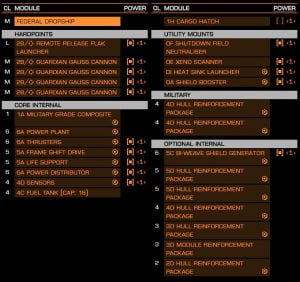
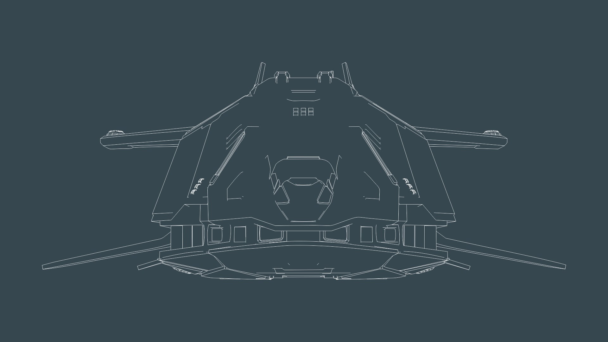
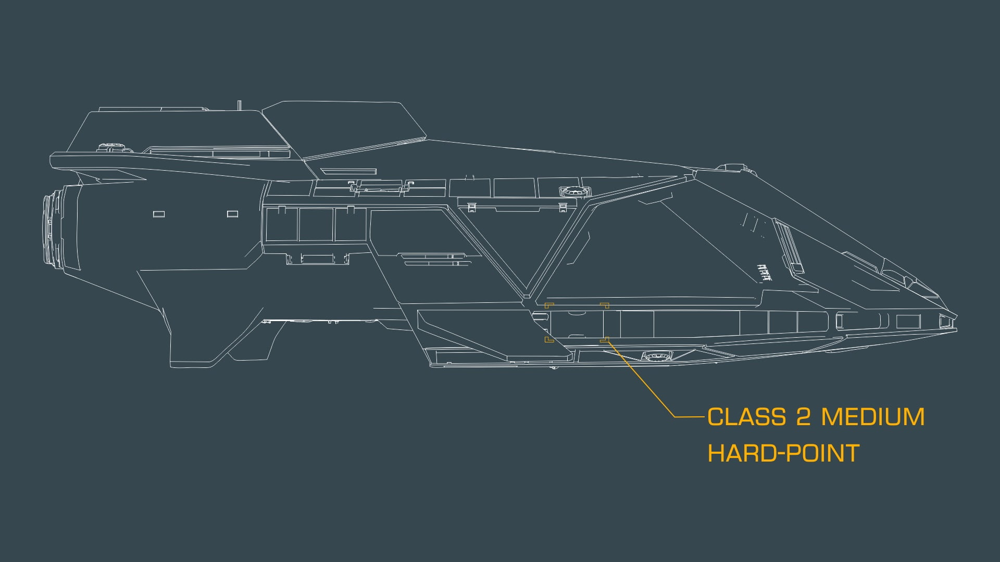
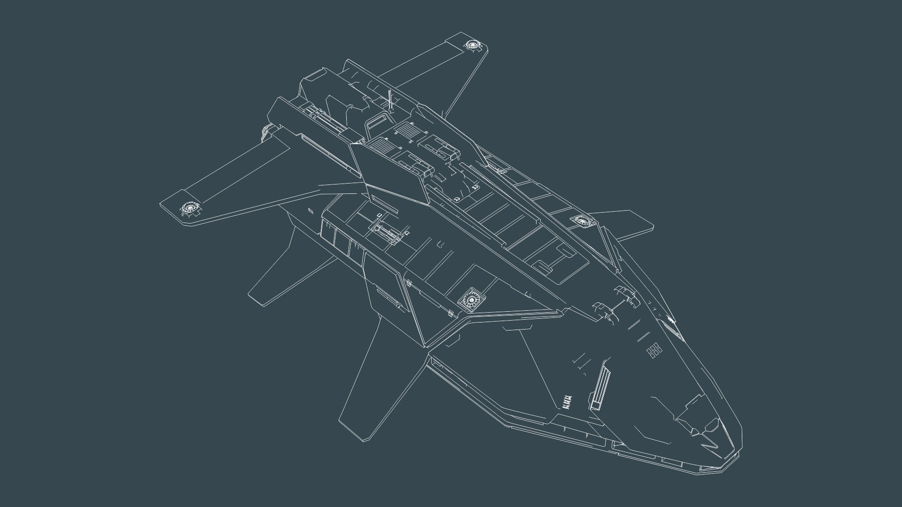
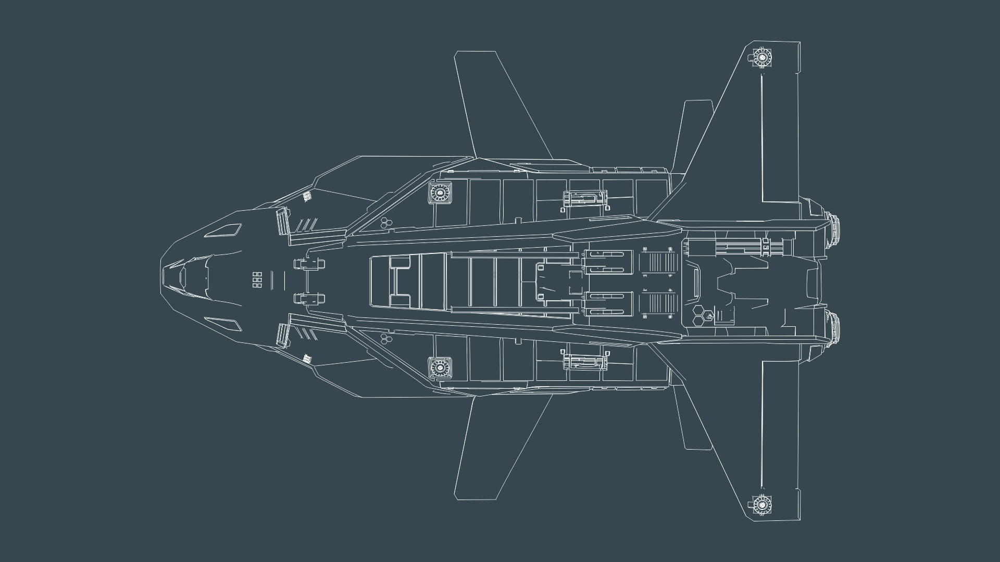
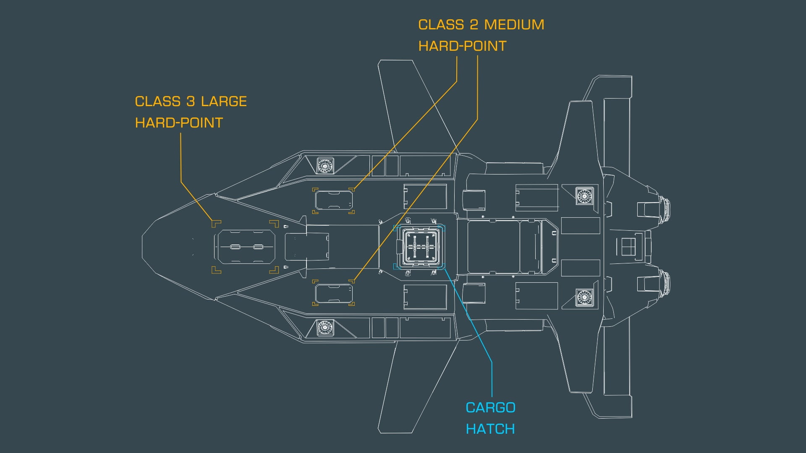

A ship build for the Federal Drop Ship approved by A.X.I. detailing ship load out and engineering modifications.

Note that power priorities should be set accordingly to your specific chosen module configuration





Direct Link: AX-Dropship
Federal Drop Ship Wireframe with permission from Anthony Hunt - (elite-dangerous-blog) - Archive Link, as site no longer exists.